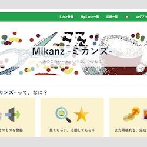
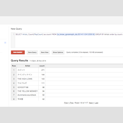
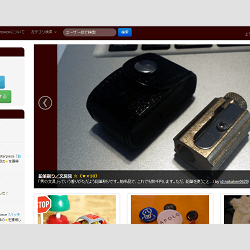
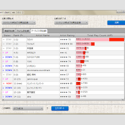
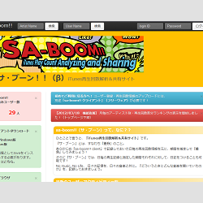

a-know（えい-のう）
いわゆるプログラミングというやつを通じてなにかをつくるのが好きな、三十路の♂です。
"つくりたい、と思ったものを自由につくれる" 、"好きなところで、好きなものを好きなようにつくれる『強さ』がある” 、そんなひとになりたいです。
さいきんは、「『ものすごいプログラマー』にはなれないかもしれないけど、『なにかをつくること、つくりつづけること』はずっとつづけていきたいなー」「だれかの助けになるようなことに自分の経験を活かしていきたいなー」、みたいなことを考えています。
Contact
Interests
- プログラミングで何かをつくること
- ブログを書くこと
- バドミントン
- カバン（鞄）の収集
Career
Webアプリケーションエンジニア（Rails / AWS）
株式会社フィードフォース
アプリケーション開発だけでなく、インフラ面にも携われる点に魅力を感じ転職。開発チームに所属。開発チームリーダーや新規プロダクトの初期開発、新人教育・メンターなども担当。2013/10 〜 現在も所属。
2015/12 〜、新卒エンジニア採用・教育担当を拝命。
サーバーサイドエンジニア（Java / GAE）
株式会社CA Beat（サイバーエージェントグループ）
趣味として活用していた Google App Engine を業務として扱える、とのことで転職。Webアプリケーションエンジニアとして、モバイル端末向けWebアプリケーションの開発に従事。エンジニアリーダーを担当。対外的に技術的なやりとりを行うことも。2012/7 〜 2013/9（1年3ヶ月）。
−（Java / GAE）
無職期間
いずれの組織にも所属せず、Web技術に関する勉強やアイデアとして温めていた Web アプリケーションの開発などに専念していた期間。2012/1 〜 2012/6（半年）。
システムエンジニア（COBOL / Java）
JFEシステムズ株式会社
鉄鋼大手企業のシステム子会社（SIer）に新卒入社。システムエンジニアとして開発業務に一貫して従事。実装リーダー、プロジェクトリーダーを担当。人事部を兼任し新卒採用面接を担当していた期間も。2006/4 〜 2011/12（5年9ヶ月）。
大学院生（修士）（C言語）
京都府立大学大学院 人間環境科学研究科 環境情報学専攻
吉冨研究室に所属。主に静止画像圧縮技術・最適化アルゴリズム（GA）についての研究に従事。学会発表も多数。修士論文が査読付き論文として採択されている。2004/4 〜 2006/3（2年）。
Activities
社内技術ブログ執筆
所属会社技術ブログ・feedforce Engineers' blog 執筆
所属会社・株式会社フィードフォースの技術ブログ feedforce Engineers' blog にて、不定期的に記事を執筆。
インタビュワー（技術面での意見交換）
株式会社ホワイトプラス様往訪・技術面での意見交換の実施 | 2015-08-06
宅配ネットクリーニング リネットや、宅配型トランクルーム HIROIEを運営する、株式会社ホワイトプラス様へ往訪、ホワイトプラス社 CTO と主に技術面での意見交換を実施。そこでの知見は自社内にて共有するなどした。会社ブログでの特集記事には、その際の写真の掲載も有り。
登壇・発表
GCPUG イベント「AWS vs GCP」登壇・発表 | 2015-04-12
GCPUG（Google Cloud Platform Users Group）の一環として開催されたイベント「AWS vs GCP」にて、AWS ユーザーとして登壇。発表資料、感想ブログエントリ。
登壇・発表
株式会社クレオフーガにて講演・発表 | 2014-08-20
株式会社クレオフーガの岡山オフィスに訪問、自社の開発スタイルについての発表やクレオフーガのエンジニアと一緒に KPT を実施などした。感想ブログエントリ。
ハッカソン
クリスマス直前ハッカソン『サンタソン』にて優勝 | 2012-12-12
クリスマス直前ハッカソン『サンタソン』に参加。元 Twitter Japan のエンジニアも参加する中、優勝を収めた。感想ブログエントリ。
登壇・発表
第3回 岡山Javaユーザ会 勉強会 登壇・発表 | 2012-07-28
第3回 岡山Javaユーザ会 主催の勉強会において、Java FX 2.x をテーマとした発表をするために登壇。当日用いた発表資料。
Programming Language
- Ruby
- Java
- Golang
- COBOL
Development Skills
-
AngularJS
-
Amazon Web Services
-
Chef
-
Google Cloud Platform
-
Google App Engine（Java / golang）
-
Hadoop（AWS Elastic MapReduce）
-
heroku
-
KVS（Datastore / Redis）
-
RDB（Oracle / MySQL / PostgreSQL）
-
Ruby on Rails
-
Scrum
-
TDD
-
Titanium Mobile
Qualifications
My Works
-
Dashing用
カスタムウィジェットの作成ダッシュボードアプリケーションのフレームワークである Dashing で使用できる、カスタムウィジェットの作成。ドッグフーディング的に、自分に必要なものを随時、作成・公開している。dashing install コマンドで簡単に利用が可能。
Ruby / 各種 API
開発期間：2015/08 等、随時 -

みんなの未完成品（ミカン）が
集まる場所・Mikanz -ミカンズ-なにかを作ることを趣味とするユーザーの "つくりかけ" のものを登録し、ユーザー同士応援しあえる、という、 「完成させることができるかどうか」を恐れずに何かを創りだそうとする全ての人を応援する、Webサービス。
Ruby on Rails / heroku / PostgreSQL
開発期間：2015/1 〜 2015/6 -

iTunes 管理楽曲情報
BigQueryローダ "Goramoph"iTunes が管理している楽曲情報（曲名・アルバム名・アーティスト名・再生回数・スキップ回数 etc.）を、Google Cloud Storage を経由して Google BigQuery にロードするツール。
開発に関しての感想エントリも。golang / Google BigQuery
開発期間：2014/11 -

愛用品紹介系サービス
「Masterpiece」「大事にされているもの」を集められる場所があれば、そこに登録すること・登録されたものを見ることが小さな楽しみになれば、きっと何らかの「いい」影響を、この世の中に加えることができるんじゃないかと考え、制作した Webサービスです。
Java / Google App Engine / Bootstrap
開発期間：2012/3 -

iTunes再生回数分析ソフト
「sa-boom!! client」iTunes でカウントされている、再生回数。iTunes 上では、再生回数による単純なソートなどを行えるものの、アーティスト別などでのソートや、ある特定期間での再生回数の算出などは行えません。
これを実現するために開発したものです。Java FX
開発期間：2008/08 〜 2009/03（前ver）2012/05（JavaFX 版） -

iTunes再生回数分析・共有サービス
「sa-boom!!」※公開終了※左記「sa-boom!! client」にて取得した再生回数情報をアップロード、他ユーザーと共有できるWebサービスです。
「再生回数情報の共有」「利用ユーザー全体での再生トレンドを楽しむ」といった、SNS的要素に主眼を置いています。
※公開終了しました※Java / Google App Engine / Bootstrap
開発期間：2012/1 〜 2012/02
My Blog Recommended Entries

2015年にやってきた事柄をふりかえって、今後何かをやっていくときの心持ち・決意表明と、同じように何かをやってみようかな、と思っている人へのエールも込めた、ポエムエントリ。

Google Chrome 拡張『Do Not Merge WIP for GitHub』を用いて、チーム開発におけるレビューを際立たせる取り組み・工夫についてのエントリ。

私の所属する組織・チームにおいて、GitHub を用いた開発をする際に気をつけている何気ない点をまとめたエントリ。

基本的にポテンシャルを見て採用される新卒社員や、積んできたキャリア・その時点でできることに違いがある中途社員のことを鑑みたときに、我々中途社員が最低限発揮すべきバリューとはなにか？といったことなどを考えたときのメモエントリ。

ダッシュボードフレームワーク『Dashing』のウィジェットとして、HBFav 的な挙動をするウィジェットを開発し公開したことについて書き残したエントリ。

当時世間を騒がせていた某 EC システムの不具合を話題にしている人たちとそのやり取りを見て、思ったことを綴ったエントリ。
/)")
esa.io に対して行ったフィードバックへの対応が素晴らしく、それに絡んで思ったこと、考えたことを綴ったエントリ。

死活監視などの SaaS である Mackerel を用いて、自分の Mac を監視させてみた際の気づきや学びについてのメモエントリ。

{kind=link}
{kind=link}
{kind=link}
株式会社ソニックガーデン・倉貫さんが書かれた同著を読み、「受託開発であっても自社サービス開発と同じようなメンタリティで開発することはできるし、逆に、自社サービス開発をしているからといって努力を怠れば、それは容易に "社内受託開発" のような状態となりうる」といったような感銘を受けたため、その書評・感想を書き残したエントリ。